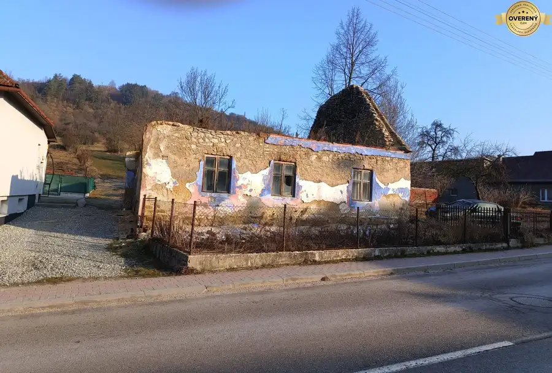
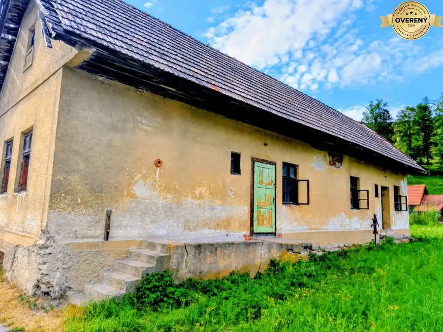
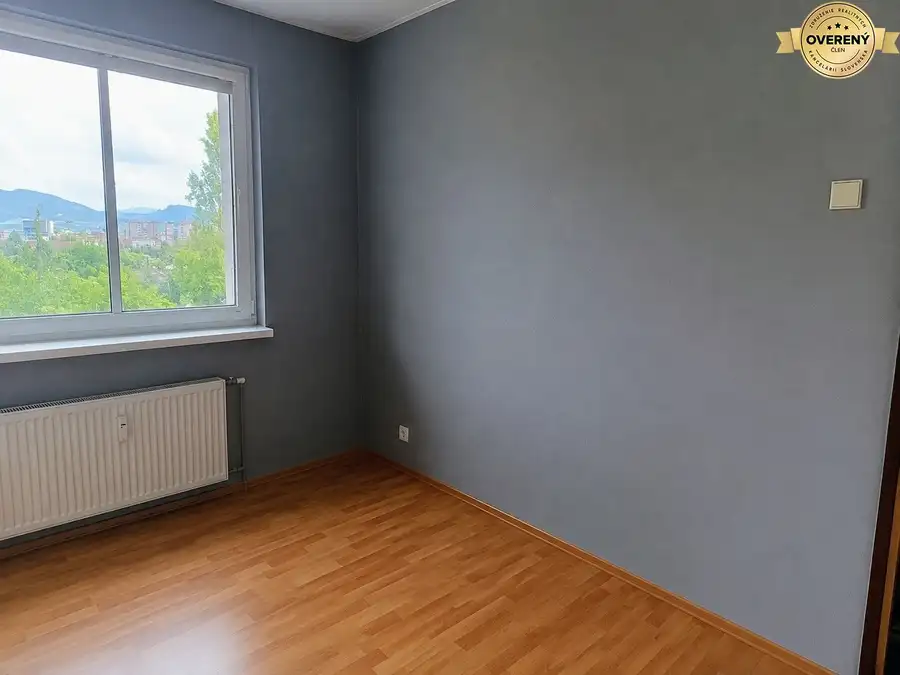

Budova s bytovými jednotkami PRIEVIDZA
Prievidza
- Dispozícia1-izbový
- Plocha1000 m²
- Stavčiastočne prerobený
O nehnuteľnosti
Realitná kancelária BALAŽI REAL ESTATE s.r.o. Vám ponúka na predaj zrekonštruovanú budovu-polyfunkčný objekt v meste Prievidza s 24 miestnosťami na bývanie. Budova je vhodná ako ubytovňa, penzión, sociálne zariadenie pre seniorov, lekárke zariadenie, kancelárie.
▪️ 1000 m2 obytnej plochy, vhodnej aj na ďalšie prenajímanie
▪️ 1200 m2 pozemku
▪️ 24 miestností / menších garsóniek/ vybavených kuchynkou a umývadlom
▪️ 3 nadzemné podlažia
▪️ toalety a sprchy na každom podlaží
▪️ vlastná kotolňa, studňa, kanalizácia
▪️ práčovňa v budove
▪️2 garáže pre autá, altánok
▪️ parkovacie miesta pred oplotenou budovou
▪️Nízke mesačné náklady
▪️ foto ilustračná
Dohoda na cene istá
Bližšie informácie vám ochotne poskytneme na tel. čísle: alebo na
ZABEZPEČÍME: - Hypotekárny úver, kompletný právny servis garantovaný advokátskou kanceláriou - zmluvu o budúcej zmluve, kúpnu zmluvu, návrh na vklad do katastra nehnuteľností, - možnosť autorizácie zmlúv vrátane elektronického podania - úhrada správnych poplatkov - poradenstvo k prevodu nehnuteľnosti - profesionálnu obhliadku - geodetické služby - profesionálny prístup.
Parametre
| Celková rozloha | 1000 m² |
|---|---|
| Úžitková plocha | 1000 m² |
| Stav | čiastočne prerobený |
| Dátum zverejnenia | 10. 9. 2026 |
Kde to je
Mohlo by Vás zaujímať

Pozemok2 145 000 €SKLABIŇA -7 km od mesta Martin -stavebný pozemok 1403m2 Sklabiňa 1403 m² Reality BALAŽI REAL ESTATE s.r.o. ponúka exkluzívne na predaj stavebný pozemok o rozlohe 1403m2 ( 14x100 m) priamo v centre obce Sklabiňa, ktorá sa…
Rodinné domy10 73 500 €Vidiecky rodinný dom-chalupa, pozemok 1050m2 Martin 4-izbový100 m² Realitná kancelária BALAŽI REAL ESTATE s.r.o. Vám exkluzívne predstavuje na predaj vidiecky rodinný dom, chalupu v malebnej chalupárskej obci Vrícko,…
Byt6 105 000 €NA PREDAJ - 1 izbový byt Martin-Podháj Martin 1-izbový30 m²5. podlažie - výmera 30m2 - 5. poschodie s výťahom - pivnica, presklenná loggia - krásny výhľad z na rieku Turiec z balkóna - predáva sa nezariadený - súčasťou…